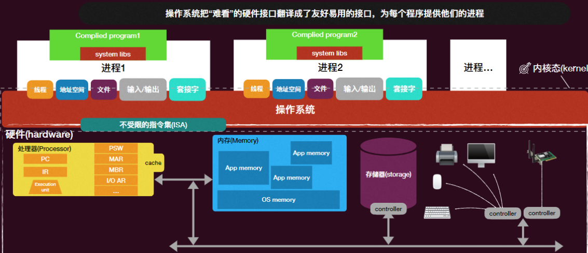

操作系统-01绪论-操作系统概述
课程大纲
- 绪论：概论、硬件/应用/抽象视角下的操作系统
- 并发：多处理器编程、互斥、同步、真实世界的并发编程
- 虚拟化：进程、线程、调度、地址空间
- 持久化：输入输出设备、驱动程序与文件系统、数据可靠性
什么是操作系统
三个重用的线索：
- 硬件-计算机
- 软件-程序
- 操作系统-管理硬件和软件的软件
软硬件的接口：若没有操作系统，程序将直面底层硬件
- 非统一接口，含有大量细节
- 有限制
- 不安全
操作系统的功能
提供简洁 、易用的物理层抽象
- 拥有无限的内存，专属的机器
- 高级的对象：文件、进程、信号
- 屏蔽限制
对程序来说：程序的“机器”就是操作系统提供的进程这个抽象，每个程序运行在自己的进程上，进程提供了比原始硬件更优美的接口。
对操作系统而言：把“难看”的硬件接口翻译成了友好易用的接口，为每个程序提供它们的进程。

资源的管理
- 分配
- 保护
- 分享
操作系统的底线是支持应用程序的运行
- 自身反而次要
- 理想情况下操作系统自身的资源开支应该不大
- 应用程序运行应该尽可能快
其它
- 可靠性：尽可能不崩溃，即使崩溃，尽可能不损坏业务逻辑
- 安全：对抗恶意的程序
- 能源：尽可能省电
- …
总结
操作系统
- 提供了方便的抽象来处理各种硬件
- 易用、受保护
- 协调资源
- 给应用提供了方便的系统服务，优化性能
- 计算机硬件发展和操作系统协同进化
操作系统-01绪论-操作系统概述
https://astronautbase.github.io/2025/08/25/操作系统-01绪论-操作系统概述/